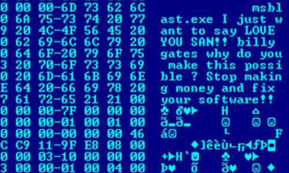
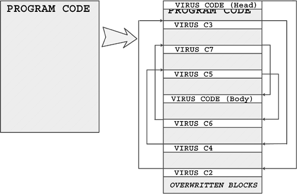
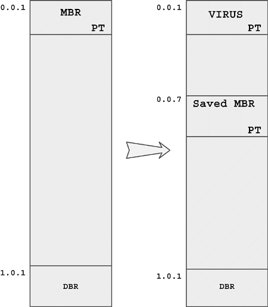

VIRUS :
I virus in senso stretto non possono entrare in un pc da soli (a differenza di come potrebbero fare i worm, come vedremo successivamente). Per contagiare il computer è necessario che l'utente svolga una tra le seguenti azioni:
- eseguire un'applicazione infetta;
- avviare da un dischetto infetto;
- avviare delle macro infette.
Ogni volta che un oggetto infetto viene eseguito, all'insaputa dell'utente viene eseguito anche il virus: esso si attiva e può così riprodursi infettando altri oggetti, installarsi residente in memoria scatenando così la sua azione più o meno devastante.
Come qualsiasi altro programma, anche i virus sono solitamente registrati su un cd o sull'hard disk, ma ovviamente non si tratta di file a sé stanti, altrimenti verrebbero subito scoperti. Vediamo come si comportano le diverse tipologie di virus in senso stretto.
Virus di file :
I virus di file sono quei programmi maligni che, per nascondersi o per far in modo di essere eseguiti più facilmente, utilizzano una di queste tecniche:
- si sostituiscono completamente ad un programma (file aventi estensione .EXE, .COM, .SCR, .BAT, ecc.). Nel momento in cui il sistema operativo o l'utente andrà ad eseguire quel programma, in realtà sarà eseguito il virus;
- si copiano all'interno di un altro programma (file con estensione .EXE, .COM, .SCR, .BAT, ecc.), solitamente alla sua fine, senza sostituirlo completamente, ma "infettandolo". Quindi, nello stesso programma, saranno presenti sia il codice originale sia il codice virale. Al momento dell'esecuzione dell'applicazione infetta verrà eseguito il virus che, a sua volta, provvederà a mandare in esecuzione anche il programma legittimo, simulando così un corretto funzionamento. In conseguenza all'infezione, il programma originale solitamente aumenta di dimensione;
- sfruttano delle priorità del filesystem nell'eseguire i programmi.
Un primo metodo consiste nella localizzazione di una cartella contenente un eseguibile con estensione .exe da parte del virus, che quindi si copia nella medesima cartella con estensione .com. I file di quest'ultimo tipo hanno la priorità di esecuzione
rispetto agli .exe: se viene invocato il nome del programma senza che ne venga specificata l'estensione, verrà eseguito prima il file .com e quindi il virus, che può decidere o meno di mandare in esecuzione anche il programma originale. Il secondo metodo invece consiste nello sfruttare i percorsi preferenziali memorizzati nella variabile di ambiente PATH per la ricerca di eseguibili sprovvisti di percorso assoluto. Se la variabile PATH, ad esempio, contiene nell'ordine i percorsi c:\ e c:\windows, un programma generico al momento della sua invocazione verrà ricercato prima in c:\ e quindi in c:\windows. Se il virus si copia nella cartella c:\ utilizzando il nome di un file di sistema contenuto nella cartella c:\windows, la richiesta di esecuzione del file legittimo porterà invece all'attivazione del virus, in quanto si trova in una cartella a più alta priorità di ricerca.

Virus di boot
I virus di boot, a differenza di quelli di file, sfruttano per diffondersi il settore di boot e il master boot record (MBR), due zone speciali dei dischi che contengono le informazioni necessarie al caricamento e all'avvio del sistema operativo. I due tipi di infezione sono analoghi: esiste solo una sottile differenza.
I virus che si inseriscono nel settore di boot vengono eseguiti ad ogni avvio del computer prima del caricamento del sistema operativo: essi rimangono in memoria quindi fino allo spegnimento del pc, svolgendo le proprie azioni dannose, consistenti solitamente nel copiarsi in tutti i supporti (che diventano un veicolo di diffusione, se usati per avviare altri sistemi) e nel danneggiamento dei dati.
I virus che si inseriscono nel master boot record, come già detto, si comportano in modo analogo ai primi, tranne che per un particolare: al momento dell'infezione, il virus provvede a spostare in un'altra parte del disco le informazioni essenziali per il caricamento del sistema operativo, sostituendovi il proprio codice. La conseguenza
è che in computer dotati di Windows NT o 2000 che usano partizioni NTFS il sistema non riesce ad avviarsi, mentre i sistemi Windows95, 98 e ME si avviano ugualmente (poiché il virus riesce a comunicare loro la nuova posizione delle informazioni precedentemente spostate), eseguendo anche il codice virale.
I virus di boot erano molto diffusi in passato. Oggi, grazie ad una maggior attenzione e ad un maggior controllo dedicati a queste zone del disco, i programmatori di virus stanno tralasciando questa tecnica, considerata ormai inefficace.

Virus multipartiti :
Questi tipi di virus sono indubbiamente i più complessi dal punto di vista della realizzazione e sono tra i più pericolosi. Come si può intuire dal loro nome, essi possono infettare sia i settori di boot dei dischi (come i virus di boot), sia i programmi (come i virus di file).
Facilmente intuibile è quindi come questi virus siano abbastanza complicati da rimuovere: anche se si elimina il virus dal settore di boot, non appena verrà eseguito un programma infetto il virus provvederà a ricopiarvisi
immediatamente. Analogamente, se i programmi infetti vengono ripuliti, al successivo riavvio del sistema il virus sarà attivato e reinfetterà nuovi programmi.
Virus di macro :
Questi tipi di virus infettano solamente i file di dati (e non i programmi) e precisamente quei file di documenti al cui interno possono essere contenute le macro definizioni.
Le macro sono delle sequenze di istruzioni (i famosi script) scritti in linguaggio VBA (Visual Basic for Application) utilizzate nei programmi della suite Office, come Word ed Excel, allo scopo di automatizzare certe operazioni sui documenti ed aumentarne quindi la flessibilità e le potenzialità. Questi processi di automazione, però, possono venire sfruttati dai virus di macro. Generalmente, per assicurarsi di venire eseguiti il più spesso
possibile, essi vanno ad infettare i modelli standard (nel caso di Word il file Normal.dot), cioè quei documenti nuovi e vuoti che ci vengono presentati all'apertura di un programma di Office. In questo caso ogni nuovo documento creato sarà automaticamente infetto. Altra tecnica usata da questi virus è quella di andare
a modificare le macro associate alle voci di menù (ad esempio Apri, Salva, Salva con nome, ecc.); quando si andrà a scegliere una di queste voci sarà eseguito anche il codice virale e potranno così essere infettati nuovi
documenti. Esistono moltissimi virus di macro poiché sono solitamente più semplici da realizzare rispetto ai virus delle tipologie precedenti; se creati adeguatamente, inoltre, possono colpire anche sistemi operativi completamente diversi tra di loro (considerato che esiste Office per Macintosh…).
Dopo aver visto in dettaglio il funzionamento dei diversi tipi di virus in senso stretto, passiamo a delle considerazioni di carattere generale.
Considerato che lo scopo di un virus è quello di infettare più programmi e più sistemi possibili, esso deve necessariamente prolungare il più possibile la sua esistenza, nascondendo la sua presenza. Tanto più piccolo è un oggetto, tanto più grandi sono le possibilità che esso passi inosservato: la dimensione di tali programmi
maligni infatti generalmente non supera le poche decine di KB, grazie anche alla codificazione di molti di loro in linguaggio Assembly.
Ma non è tutto: alcuni virus "intelligenti" utilizzano altre tecniche per cercare di rendersi invisibili e di passare inosservati ai software antivirus: la tecnica stealth e la tecnica del polimorfismo.
La tecnica stealth (propria dei virus stealth) consente al virus di monitorare, grazie ad una parte di esso che rimane costantemente in memoria, le chiamate dei programmi ad alcune funzioni del sistema operativo. In questo modo, ad esempio, un virus di boot può "accorgersi" del tentativo di un'applicazione di leggere dal
settore di boot o dall'MBR, ripulendo preventivamente quel settore dal suo codice, per poi reinfettarlo nuovamente a lettura conclusa. In maniera del tutto analoga i virus di file possono ripulire temporaneamente i programmi infetti. Il rovescio della medaglia è che i software antivirus possono facilmente rilevare la parte di codice virale costantemente presente in memoria. Una delle prime operazioni che un virus effettua prima di infettare un oggetto è quello di controllare che in quell'oggetto non sia già presente una copia di se stesso: una duplice infezione, infatti, potrebbe compromettere
la sua funzionalità e quindi la sua esistenza. Per svolgere questa azione, il virus cerca nell'oggetto in questione la presenza o meno di una stringa che lo caratterizza. Se la stringa viene trovata, significa che l'oggetto è già infetto; nel caso opposto, viene effettuata l'infezione. Se da una parte questa tecnica assicurala sopravvivenza al virus, dall'altra lo rende vulnerabile: la stringa rappresenta infatti la sua firma, che sta alla
base delle definizioni utilizzate dai software antivirus per il riconoscimento dei codici virali. La tecnica del polimorfismo, propria dei virus detti polimorfici (nonché anche più evoluti), permette loro di superare questa vulnerabilità utilizzando la crittografia: un codice criptato è infatti difficilmente analizzabile se non se ne conoscono l'algoritmo tramite il quale è stato criptato e la relativa chiave. I virus polimorfici hanno al loro interno diverse funzioni di cifratura, o addirittura un generatore di cifratura casuale, usati per criptare ogni lorocopia attraverso algoritmi sempre differenti. Solo la conoscenza di tutte queste funzioni di cifratura può permettere ad un antivirus di riconoscere il codice virale.